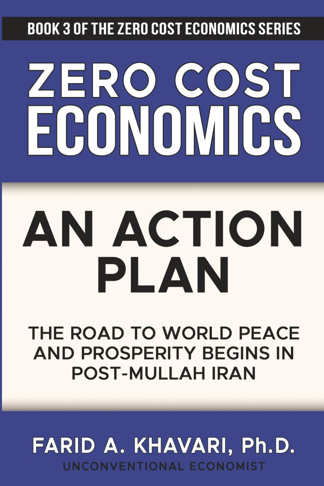
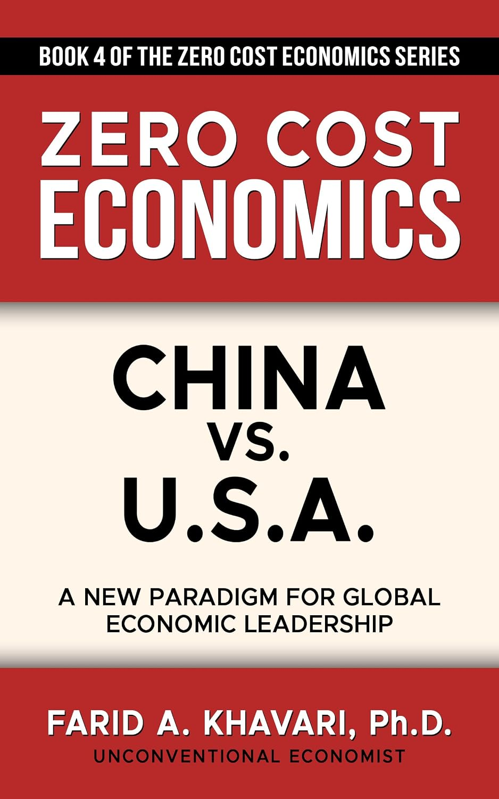
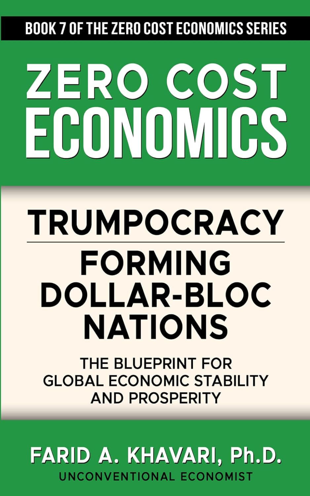
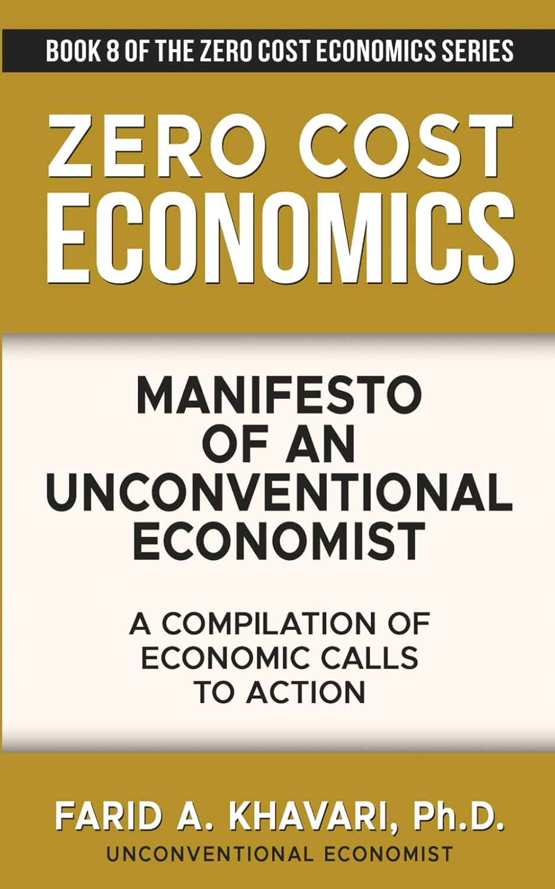
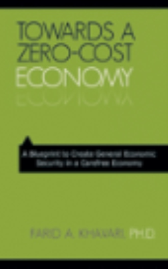
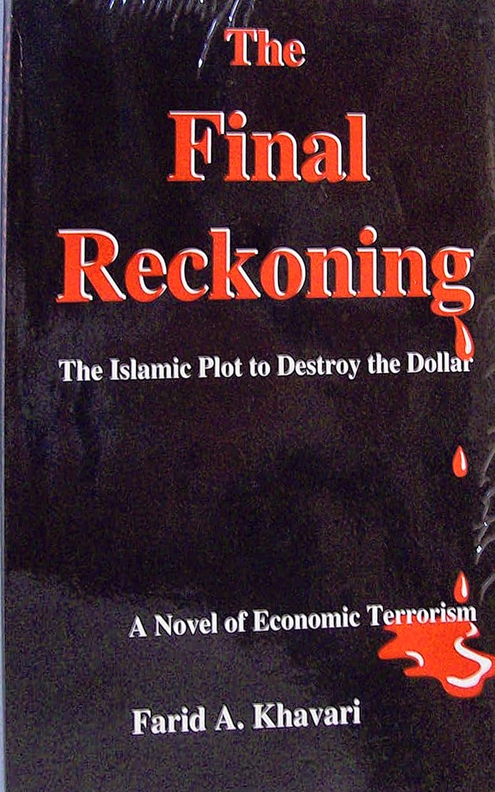

Books
The Zero Cost Economics series (2026), in order, plus the classics that built it — click any cover to buy on Amazon.

Zero Cost Economics: A New Framework for Universal Prosperity
Book 1 · The Series
Leaving Liberal Dystopia: The Road to a Bright Future
Book 2 · 2026 · Paperback $14.99

Zero Cost Economics: An Action Plan — The Road to World Peace and Prosperity Begins in Post-Mullah Iran
Book 3 · 2026 · $19.99 · Kindle $9.99

China vs. U.S.A.: A New Paradigm for Global Economic Leadership
Book 4 · 2026 · $14.99 · Kindle $9.99
Zero Cost Economics
An Introduction to the Economics of an Economy
Khavari
Zero Cost Economics: An Introduction to the Economics of an Economy
In the series · Start here

Trumpocracy: Forming Dollar-Bloc Nations — The Blueprint for Global Economic Stability and Prosperity
Book 7 · The Series

Manifesto of an Unconventional Economist: A Compilation of Economic Calls to Action
Book 8 · The Series

Towards a Zero-Cost Economy: A Blueprint to Create General Economic Security in a Carefree Economy
2009 · The original blueprint
Environomics: The Economics of Environmentally Safe Prosperity
1993 · Praeger

The Final Reckoning: The Islamic Plot to Destroy the Dollar
1995 · A novel of economic terrorism
Classic · 2011
The Final Crash
Khavari
The Final Crash: The End of U.S. Dominance in 2013
2011
Earlier works — the full bibliography
- Oil & Islam: The Ticking Bomb (1990) · Vultures: Doctors, Lawyers, Hospitals and Insurance Companies — What's Wrong, and What to Do About It (1990)
- In German: Die OPEC im weltwirtschaftlichen Spannungsfeld (1975) · Die Oelpreispolitik der OPEC-Länder (1975) · Die Oelkrisen bedrohen den Wohlstand des Westens (1973)
- His first book, at 21: Education Corps in Building the Villages (Iran, 1964)
Find every earlier work on Amazon - search all Farid A. Khavari books
His foundational book was long offered as a free download on his original site, ZeroCostEconomy.com.